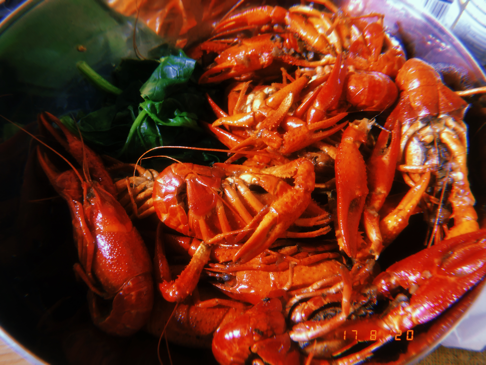
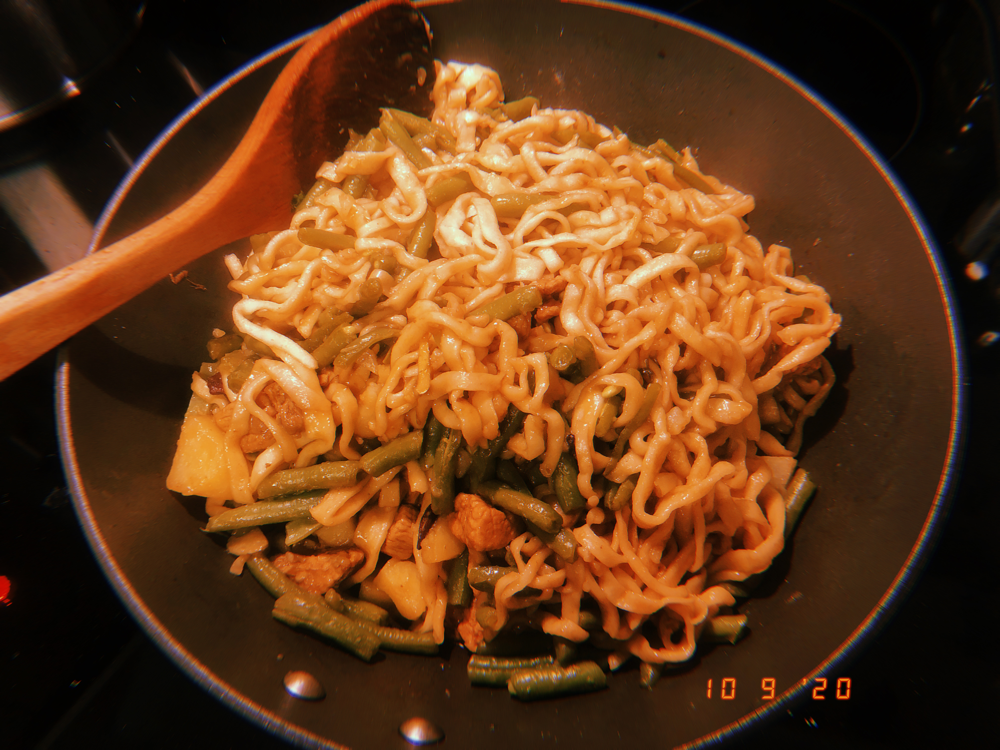
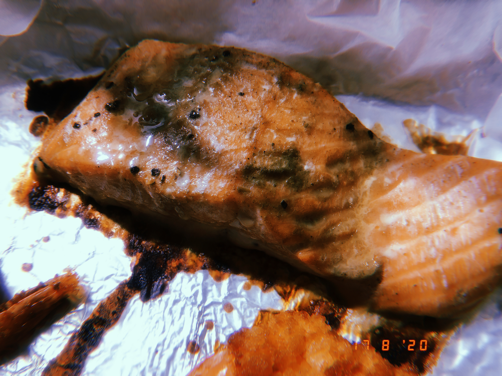

My recipe share some home-cooked dishes that you can make at home too. Do you want to try them yourself after you've seen them? Let's share!

LET'S MAKE It!
INGREDIENTS
Crayfish
Parsley
Salt and Pepper
Your Favorite Sauce
DIRECTIONS
- Stir-fry with oil and pepper until fragrant.
- While the pepper is smells good, Add the crayfish in the picture.
- Once the crayfish is ready, Add the sauce you want.
- Finally simmer for ten minutes.
For Green bean noodlesIn just 4 simple steps your Green bean noodles is ready. :)

DIRECTIONS
- Drain oil and beans.
- While the green beans is smells good, Add the noodles.
- Once the noodles is ready, Add the sauce you want.
- Finally simmer for ten minutes.
For Grilled salmon-Healthy and simple.

DIRECTIONS
- Marinate the salmon with seasoning for half an hour.
- Marinate the salmon with seasoning for half an hour.
- When done, add the black pepper.
- To complete!